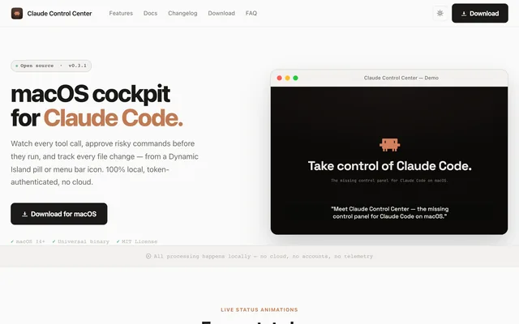

Claude Control Center
A macOS cockpit for Claude Code. Watch every tool call, approve risky commands before they run, and track every file change from a Dynamic Island pill or the menu bar. It runs fully on your Mac: a token-authenticated local server, no cloud, no telemetry.
